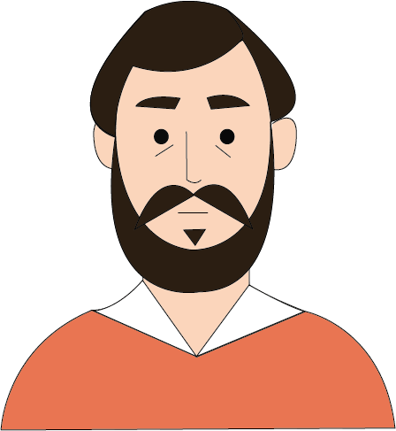

Gustave Courbet


Nascita:
10 Giugno 1819, Ornans, Francia
Morte:
31 Dicembre 1877, La Tour-de-Peilz, Svizzera
Corrente:
Realismo



Opere più famose: Gli spaccapietre 1849; L’atelier dell’artista 1855
Curiosità: Nel 1871 si affilia al governo socialista e per questo motivo viene arrestato. Appena scarcerato si rifugia in Svizzera e lo Stato gli confisca i beni e tiene sotto controllo i suoi affetti. Soffrendo di questa situazione, inizia a bere fino al colpo fatale: la vendita all’asta delle opere della sua bottega di Parigi. Qualche giorno dopo questo evento, Courbet muore.
Citazione: “La pittura è un’arte essenzialmente concreta e può consistere soltanto nella rappresentazione delle cose reali ed esistenti.”